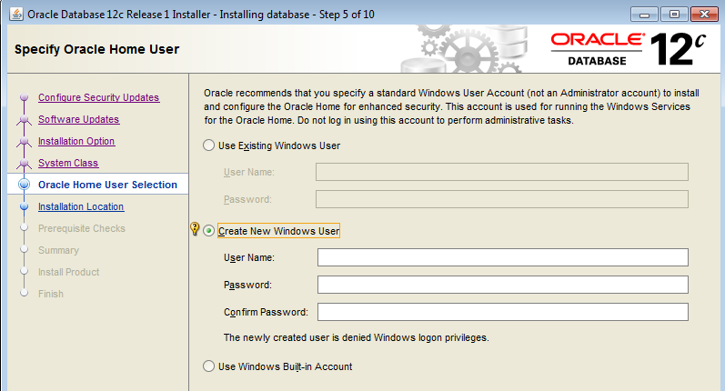

This was first published on https://www.dbi-services.com/blog/oracle-12cr2-on-windows-virtual-accounts/ (2017-03-16)
Republishing here for new followers. The content is related to the versions available at the publication date.
.
Oracle Database 12.2.0.1 is released for Windows, just 2 weeks after the Linux release, and this is a very good news. Let’s see something new you will encounter in the first screens of Oracle 12.2 installer. Don’t worry, the default choice is the right one. But better understand it.
On Linux, you don’t install Oracle Database as root. You create a user, usually called oracle, which will be the owner of the database files and the instance processes and shared memory. This looks obvious be before 12c the Oracle Instance is running as the root equivalent, the built-in SYSTEM user. This was very bad from a security point of view: running a software with the most powerful user on the system.
This has changed in 12.1 with the possibility to define another user, which already exists, or which you create at installation providing user name and password. 
This user is called the Oracle Home user. Just to get it clear, it is the user which will run the instance. You still install the software as Administrator.
So, in 12.1 the choice is existing user, new user or SYSTEM and the recommandation is to create a user. But it is quite annoying to have to provide a user and password for a user you will never use to log in.
Windows 2008 R2 has introduced two new local service users: Managed Service Accounts (MSA) and Virtual Accounts.
Managed Service Accounts are created by the administrator in the Active Directory (using New-ADServiceAccount). And you can use them in 12c by mentioning the name in ‘Use Existing Windows User’.
Virtual Accounts are enabled by default in Windows. In 12.2 you can use this feature for Oracle Home account. It is the first option, the default one, and the one recommended if you have no reason to use another user:
If you don’t know what has been defined, look at the registry. Find the ORACLE_HOME you run from, read the registry key from %ORACLE_HOME%\bin\oracle.key and look at the keys:
Here ORACLE_SVCUSER_TYPE is new with value ‘V’ which means that the ORACLE_SVCUSER is a Virtual Account. ORACLE_SVCUSER_PWDREQ mentions that no password has to be provided for the instances services.
Note that the old method, the ‘built-in account’ had the following, mentioning the internal SYSTEM, and without a TYPE:
ORACLE_SVCUSER REG_SZ NT AUTHORITY\SYSTEM
ORACLE_SVCUSER_PWDREQ REG_SZ 0The 12.1 method of non-privileged user had ORACLE_SVCUSER_PWDREQ=1 and requires the password for the services.
Back to virtual account, I said that they are used for instance services and database files. Let’s have a look at services and file security properties:
The database file owner is the user we have seen above as defined by ORACLE_SVCUSER but the service ‘Log On As’ has the special ‘NT SERVICE\ServiceName‘ which is the Virtual Account. It is not a real account like built-in, local or domain ones. It is more a service that is displayed as an account here.
Don’t panic in front of this additional choice. Virtual Account is the right choice to run with a minimal privilege user and no additional complexity.
{kind=link}
{kind=link}
{kind=link}
{kind=link}